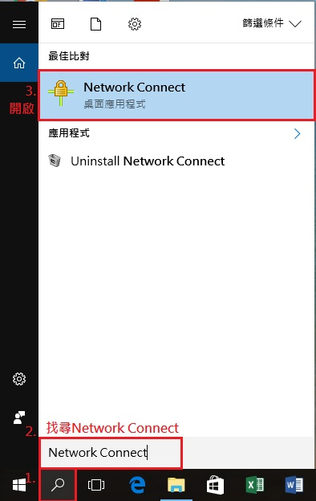
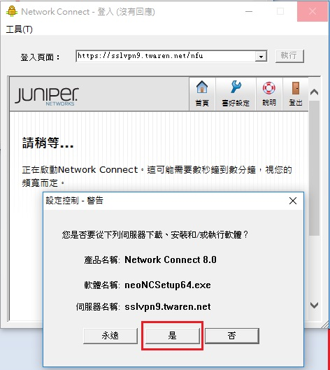
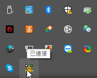

Windows << Previous Next >> 期中影片
Windows << Previous Next >> 期中影片
VPN
1.第一步 安裝SSL VPN 程式(Juniper Networks Connect)
下載網址 https://nfucc.nfu.edu.tw/index.php/zh/download/download-network/ssl-vpn
下載完開啟它

2.進行身分驗證
搜尋Network Connect點擊並開啟它

3.開啟並在紅線處輸入 https://sslvpn9.twaren.net/nfu 後Enter
之後輸入後輸入你的學號加和校務行政的密碼

驗證完成後就能下載並連接上


Windows << Previous Next >> 期中影片